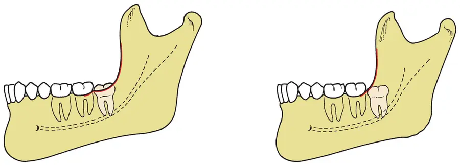
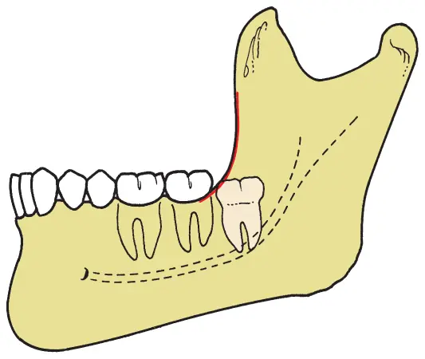

نسخه استخراجشده؛ ترجمه یا تأیید علمی انجام نشده است. وضعیت: captured
روش دوم طبقهبندی، بر پایهی مقدار دندان نهفتهای است که با استخوان راموس صعودی مندیبل پوشیده شده. این طبقهبندی با نام Pell و Gregory شناخته میشود و به آن کلاسهای ۱، ۲ و ۳ هم گفته میشود.

برای این طبقهبندی، جراح باید رابطهی میان دندان و بخش قدامی راموس را با دقت بررسی کند.
و پیامد بالینی کلاس ۱ که فراتر از سختی جراحی است: اگر دندان در وضعیت عمودی باشد، شانس رویش به موقعیت طبیعی خوب است — به شرط آنکه تشکیل ریشه ناقص باشد.
و پیامد کلاس ۲: دندان نمیتواند کاملاً آزاد از استخوانِ روی تاج و سطح دیستال رویش یابد، چون یک شلف کوچک استخوان روی بخش دیستال دندان قرار دارد.
جمعبندی: کلاس ۱ بیشترین دسترسی را میدهد، پس سرراستترین برای برداشتن است؛ و کلاس ۳ کمترین دسترسی و در نتیجه بیشترین سختی را دارد.
سومین سیستم طبقهبندی، عمق دندان نهفته را نسبت به ارتفاع مولر دوم مجاور میسنجد. این هم پیشنهاد Pell و Gregory است و طبقهبندی A، B، C نامیده میشود.

منطق درجهبندی: در این سیستم درجهی سختی با ضخامت استخوان پوشاننده سنجیده میشود — یعنی هرچه عمق دندان نهفته بیشتر، سختی بیشتر. و توضیح مکانیکیاش روشن است: با کمدسترستر شدن دندان، سکشن کردن دندان و آماده کردن purchase point سختتر میشود و در نتیجه سختی کلی عمل بهطور قابلتوجهی بالا میرود.
و حالا سه سیستم را با هم به کار ببر — سه ترکیب نمونه را ببین:
و روند کلی: با تغییر رابطهی راموس از کلاس ۱ به کلاس ۲ و افزایش عمق به کلاس B، درجهی سختی بهمراتب بیشتر میشود.